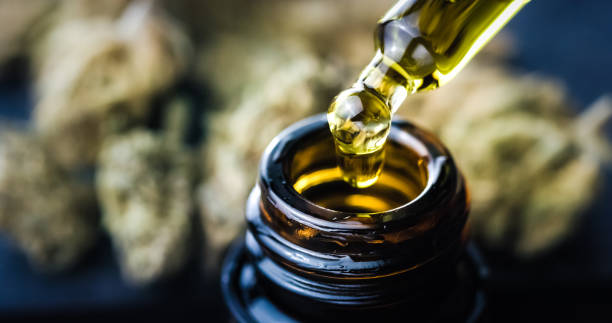

What is the link between medical cannabis and treating inflammatory bowel disease?

In recent years, there has been growing interest and research into the potential benefits of medical cannabis in treating inflammatory bowel disease (IBD).. IBD is a chronic condition that affects the gastrointestinal tract, causing inflammation and leading to symptoms such as abdominal pain, diarrhea, and weight loss.
Posted by on 2024-06-12
What are the potential benefits of using medical cannabis for inflammatory bowel disease?

Inflammatory bowel disease (IBD) is a chronic condition that affects the digestive system, causing inflammation and damage to the gastrointestinal tract.. Symptoms of IBD include abdominal pain, diarrhea, fatigue, and weight loss, among others.
Posted by on 2024-06-12
What is the current research saying about the effectiveness of medical cannabis for treating inflammatory bowel disease?

In recent years, there has been a growing interest in the potential use of medical cannabis for treating inflammatory bowel disease (IBD).. IBD is a chronic condition that affects the gastrointestinal tract and includes conditions such as Crohn's disease and ulcerative colitis.
Posted by on 2024-06-12
What are the different ways to consume medical cannabis for managing symptoms of inflammatory bowel disease?
If you suffer from inflammatory bowel disease (IBD), you may have considered using medical cannabis to help manage your symptoms.. Cannabis has been shown to have anti-inflammatory properties and can provide relief from pain, nausea, and cramping associated with IBD.
Posted by on 2024-06-12
What is the legal status of using medical cannabis for inflammatory bowel disease treatment?

The legal status of using medical cannabis for inflammatory bowel disease treatment varies depending on where you are located.. In some places, such as certain states in the United States and countries like Canada, medical cannabis is legal and can be prescribed by doctors for a variety of conditions, including inflammatory bowel disease.
In these locations, patients with inflammatory bowel disease may be able to access medical cannabis products to help manage their symptoms.
Posted by on 2024-06-12
How to Naturally Manage Inflammatory Bowel Disease with Medical Cannabis
Inflammatory Bowel Disease (IBD) is a chronic condition that affects millions of people around the world, causing inflammation in the digestive tract and leading to symptoms like abdominal pain, diarrhea, and fatigue.. While there are various treatments available for IBD, many patients are turning to medical cannabis as a natural way to manage their symptoms.
Medical cannabis has gained popularity in recent years for its potential therapeutic benefits in treating a wide range of conditions, including chronic pain, anxiety, and inflammation.
Posted by on 2024-06-12
Discover the Power of Medical Cannabis for Inflammatory Bowel Disease Relief

Medical cannabis has been gaining traction as a potential treatment for various medical conditions, including Inflammatory Bowel Disease (IBD).. IBD is a chronic inflammatory condition of the digestive system that affects millions of people worldwide.
Posted by on 2024-06-12
Want Relief from Inflammatory Bowel Disease? Try Medical Cannabis Today!

Are you struggling with the painful symptoms of Inflammatory Bowel Disease (IBD)?. Do you find yourself constantly searching for relief but coming up short?
Posted by on 2024-06-12